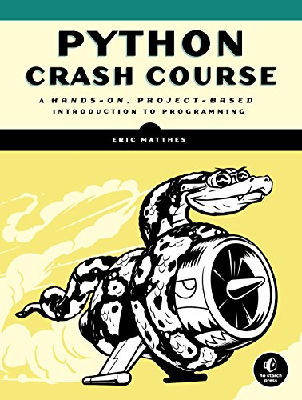

Welcome to Erick's Class History
SE126 Python

Course Description
A study of the Python programming language will be used as the vehicle to introduce advanced programming concepts. At the end of the course, students should be able to analyze problems and develop their solutions by applying advanced flowcharting, coding and programming techniques. Students should be able to design, develop, test and implement programs that involve nested conditional control structures, file handling, interactive processing, data editing, array processing, and sort and search algorithms.
SE137 CSS

Course Description
Students will learn how to use responsive design to create web sites that are visually appealing on any device with Cascading Style Sheets (CSS). Topics include code reuse, grid layouts and flexboxes. Students will also research current CSS frameworks and use best practices to determine which framework is best suited for a given project.

SE245 C#

Course Description
This first programming course in C# introduces students to topics that may include intermediate implementation of control structures, the problem-solving process, completing the problem-solving process and getting started with C#, variables, constants, arithmetic operators, and assignment statements, built-in functions, program-defined value-returning functions, and program-defined void functions. Student will be learn to write C# programs that include classes, polymorphism, overloading, exception handling, and interfacing with databases.
SE251 JavaScript

Course Description
This course builds on the student's understanding of JavaScript learned in previous courses. JavaScript is the programming language used to extend the capabilities of the web browser to include animation, interactive forms, object control, and basic decision-making. Topics addressed will include client-side form validation, Object Oriented Programming, DOM Manipulation, data IO, persistence, and the HTML 5 canvas.
SE133 My Sql Server
Course Description
Given a business scenario, students will learn how to design and implement a relational database that will store and secure information according to industry standards. Students will become proficient in the Structured Query Language (SQL) and apply their skills on both MySQL and SQL Server. Students are taught to create and maintain database objects and to store, retrieve, and manipulate data.